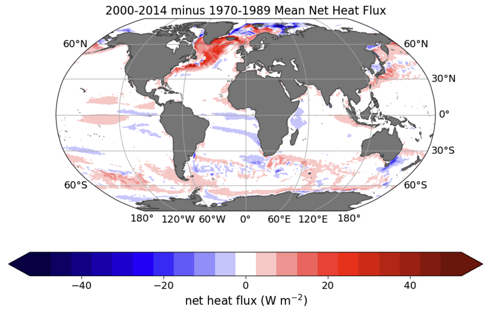
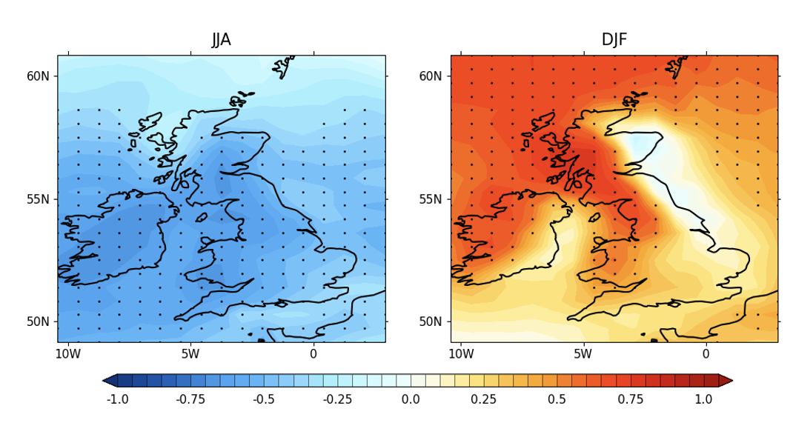
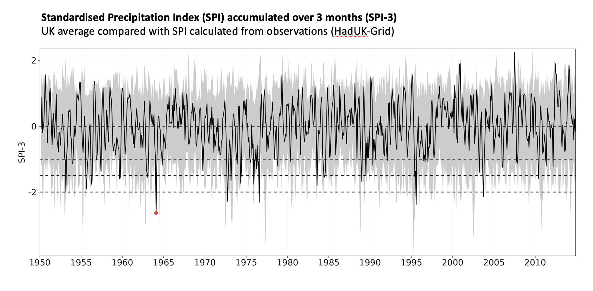
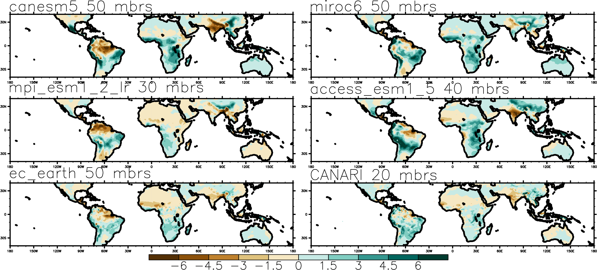
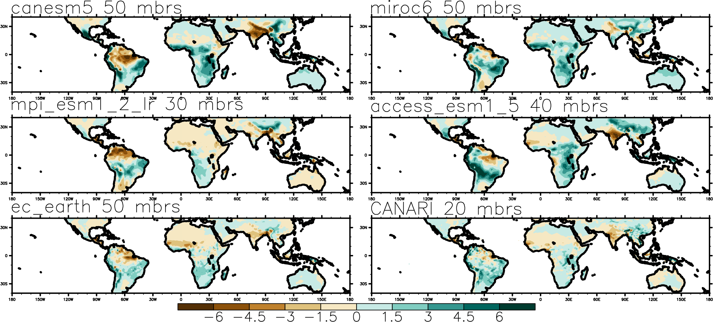
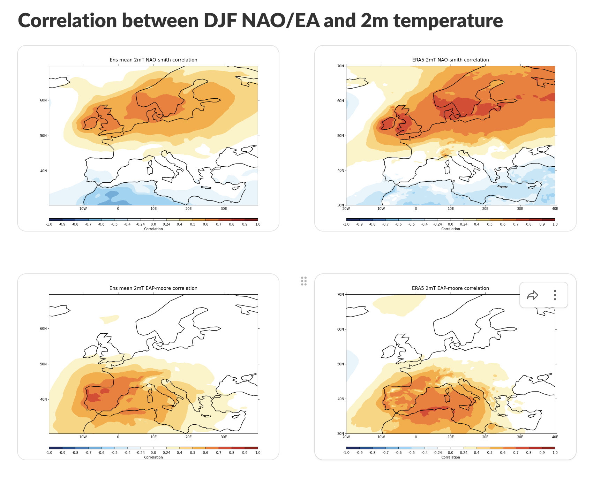
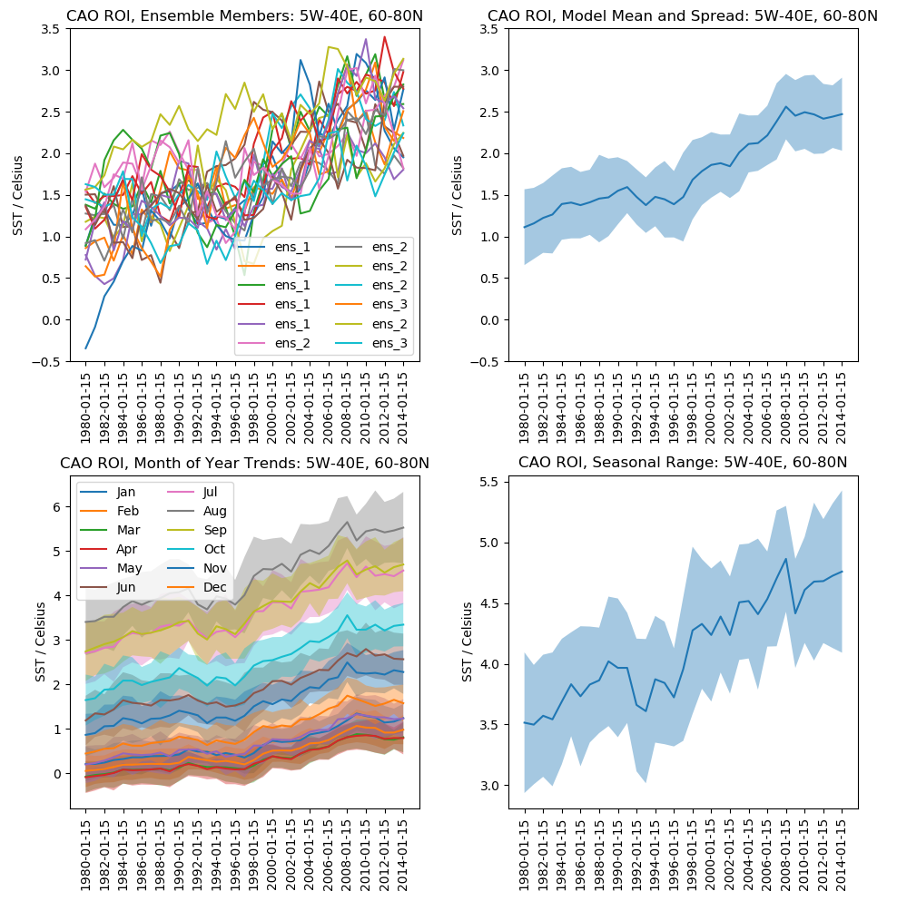
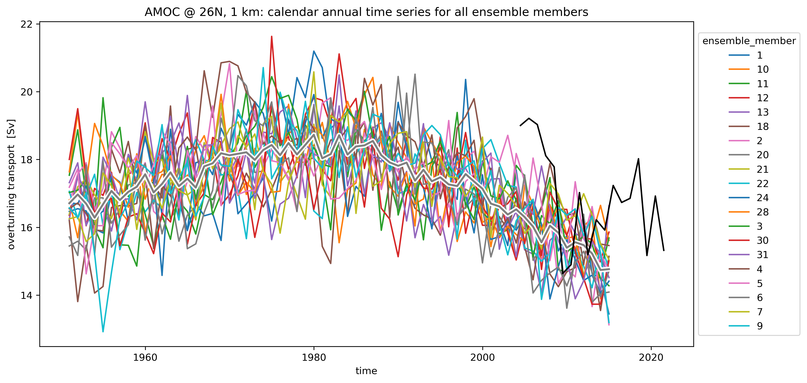

Highlights
January 2025
Updates begin January 27, 2025!
March 2024
Day 5
Motivated by Bablu's time series of heat fluxes over the sub polar gyre (SPG), Simon has been looking at the difference in air-sea heat from between the post-2000 period and 1970-89. The key features are the weakening of heat loss (red colors) in the SPG which is potentially linked to the weakening of the AMOC found by Adam and Niamh. Process chain would be : weaker AMOC beings less warm water northwards, reduces SST and thus surface heat loss. And secondly the increase in heat loss in the Arctic (blue) which is presumably related to sea ice decline exposing more of the ocean surface and thus enabling greater heat loss to the atmosphere.

Day 4
Amulya showed results which investigated the response of precipitation to changes in the jet at the end of day highlights meeting. Here is a figure of the relationship between the JJA jet latitude (left) and the DJF jet speed and precipitation over the UK.

Wilson has been looking at precipitation of the UK, which he nicely showed at the end of day highlights meeting. Here is his time series of the Standardised Precipitation Index (SPI) accumulated over 3 months (SPI-3)UK average compared with SPI calculated from observations (HadUK-Grid).

Paul has been busy looking at precipitation in the CANARI-LE and putting it into perspective with other LE. The figures below show the MJJAS (NDJFM) precipitation for the Northern (Southern) hemisphere (see the #sprint-highlights Slack channel for more figures).
 

Laura has been looking at the relationship between the winter (DJF) NAO/EAP and 2 m temperature and precipitation. The figure below shows the results for 2 m temperature (see the #sprint-highlights Slack channel for more figures).

Day 3
First results from Claire investigating sea surface temperature in cold air outbreak regions.

More AMOC plots from Niamh, this time in depth space at 40N.

Here are some Adam's plots of annual mean AMOC index at 26N and 1 km depth.

Now available, thanks to Adam, AMOC in depth and density space (/gws/nopw/j04/canari/shared/large-ensemble/derived/HIST2/ensemble num/OCN/yearly/year/).
First results from Lizzie, composite of DJF sea level pressure for strong - weak polar vortex.

Day 2
First results from Bablu, the surface ocean heat flux in the sub-polar gyre for all ensemble members.

First results from Tony who is looking sudden stratospheric warming, the figure takes a look at the annual cycle of 10hPa U in ensemble member 1. Years with suspected SSW are highlighted in colour, others are in grey.

Day 1
First results from Dan, the mean sub-polar gyre (50:65N, 0:60W) SST and upper 500 m potential temperature. With shading showing +/- 1 standard deviation.